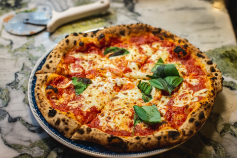

Pizza Margherita

Ufficialmente riconosciuta nel 2010 come specialità tradizionalegarantita dall'Unione Europea e nel 2017 dall'UNESCOcome patrimonio immateriale dell'umanità!Nasce intorno al 1720 quando comparivano i primi dischi di pasta conditi con pomodoro. Ma solo nel 1889 naque la più famosa delle pizze napoletane!
Ingredienti per 3 pizze di 28 cm di diametro
- 300 gr di farina"0-quella per le pieghe
- 200gr di farina manitoba
- 3-400ml di acqua
- 4gr di lievito di birra fresco
- 10 gr di sale fino
- Semola di grano duro per stendere le pizze
Per il condimento per ogni pizza da circa 270 gr:
- 120gr di pomodori pelati o 300gr di passata di pomodoro
- circa 100gr di fiordilatte perfettamente sgocciolato o 200gr di mozzarella
- basilico fresco in foglie
- 1 cucchiaio di olio extravergine>
TEMPI DI PREPARAZIONE
| Preparazione |
cottura |
totale |
| preparazione 20 minuti + tempo di lievitazione |
cottura 5 minuti |
totale 25 minuti |
Preparazione